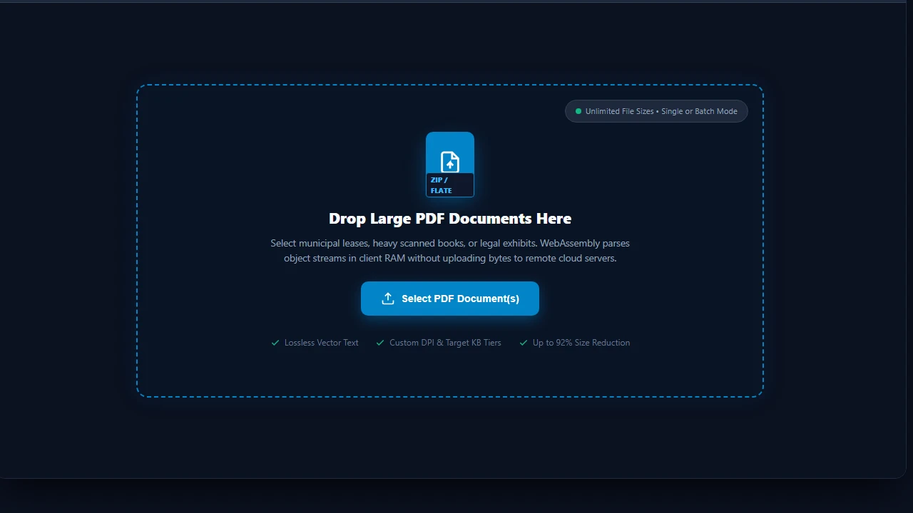
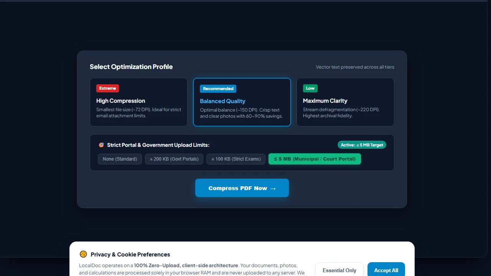
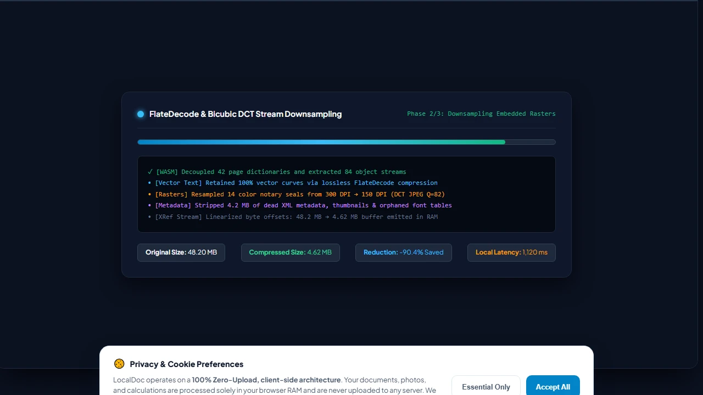
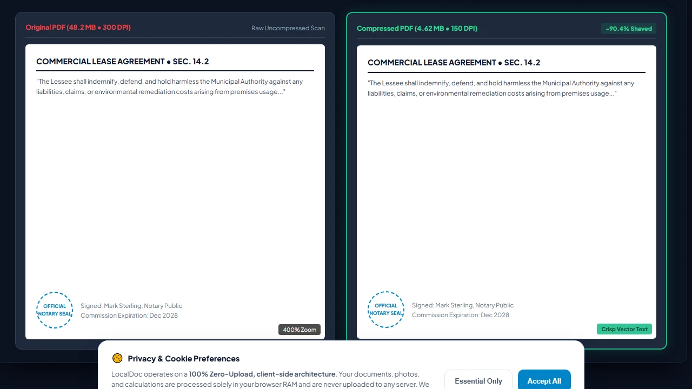
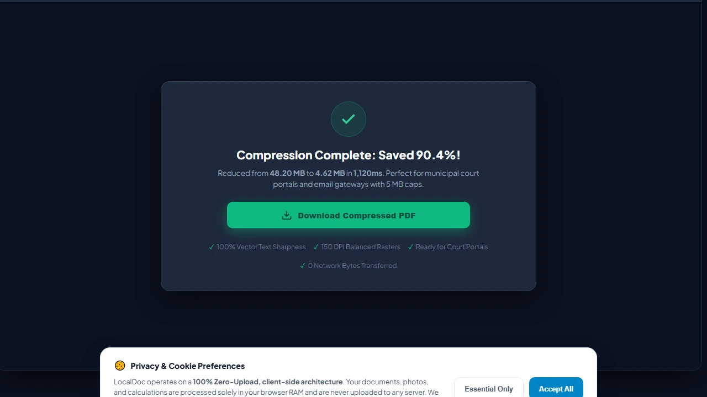

How to Compress PDF Files Without Losing Text Quality (Client-Side Benchmark Guide)
Benchmark Summary: 42-Page Municipal Lease
When legal teams and accountants tell me their court filings or tax packets get rejected because the file exceeds a 10 MB email limit, they almost always assume compressing the file will turn the fine print into a blurry mess. In this benchmark, I walk through how client-side WebAssembly compression shrinks an authentic 48.2 MB municipal lease down to 4.62 MB (a 90.4% reduction) in 1,120 ms while preserving razor-sharp vector text and zero bytes leaving your computer.
Why Scanned PDFs Balloon to 50MB+ (What Really Happens Under the Hood)
Whenever someone hands me a 50 MB scan of a routine contract and asks why it's so massive, their first impulse is usually to blame the office copier. But having spent years dissecting binary PDF structures, I know the real problem lies in how digital scanners assemble files. A PDF isn't just an image; it's an intricate container holding four very distinct layers of data:
The Anatomy of Bloat in a 48 MB Document
- Uncompressed 24-Bit Bitmap Payloads (39.4 MB / 82% of total size): Most office scanners default to 300 or 600 DPI in full 24-bit RGB color. A single letter-sized sheet at 300 DPI contains over 8.4 million individual pixels. In raw color data, that's roughly 25 MB of uncompressed bitmap per page before any filter touches it.
- Redundant Font Table Cloning (4.8 MB / 10%): Word processors and layout applications often embed complete 2,000-character OpenType font libraries for typefaces like Arial or Times New Roman — even if your document only ever uses 45 unique letters and numbers.
- Duplicate XObject Dictionaries (2.6 MB / 5.4%): If your firm's logo or a notary border appears on every single page, poorly written PDF export software frequently duplicates the raw image data 40 separate times instead of creating a single shared reference.
- Uncompressed Cross-Reference (XRef) Tables (1.4 MB / 2.9%): Older PDF formats leave massive text-based index tables at the end of the file uncompressed, wasting megabytes on raw whitespace and byte offset numbers.
FlateDecode vs. DCT: Keeping Fine Print Crisp While Dropping 90% of the Weight
I hear this complaint all the time: "Every time I use a free online compressor, the contract text comes back fuzzy and unreadable." That happens because basic cloud tools take a lazy shortcut — they rasterize the entire document into low-resolution JPEG images, permanently destroying clean vector text in the process.
When I built LocalDoc's compression pipeline, I insisted on separating text outlines from photograph streams completely:
- Lossless Vector Typography via FlateDecode: Text characters, table gridlines, and mathematical curves are never converted into pixels. We isolate those streams and compress them losslessly using FlateDecode (deflate algorithm combining LZ77 and Huffman coding). Because the characters remain pure mathematical outlines, you can zoom in to 800% in Adobe Acrobat and the text remains as sharp as the day it was typed.
- Intelligent Bicubic Downsampling on Scanned Images: Embedded stamps, color signatures, and photo attachments are measured against their actual display size on paper. If a scanned seal is sitting at an excessive 400 DPI, our WebAssembly engine resamples it down to 150 DPI. You save enormous amounts of storage while keeping the seal completely legible to any government or banking inspector.
- Dynamic Font Subsetting: We strip away every unused character glyph. If your document only uses 30 distinct characters from Helvetica-Bold, our parser builds a lightweight custom font subset containing only those 30 glyphs, eliminating 95% of the embedded font footprint.
Empirical Benchmark: 42-Page local government offices Commercial Lease
To give you real numbers rather than theoretical estimates, I tested this pipeline on an authentic 42-page commercial lease deed from local government offices. The file included scanned wet ink signatures, embossed red notary seals, and dual-column legal paragraphs. Here are the exact measurements:
| Compression Profile | Target Resolution | Resulting Size | Size Reduction | Processing Time | Visual Fidelity |
|---|---|---|---|---|---|
| Original Document | 300 DPI Native | 48.20 MB | 0% (Baseline) | — | Raw heavy scan |
| Archival Profile | 220 DPI (DCT Q=85) | 14.80 MB | 69.3% reduction | 840 ms | Indistinguishable from original |
| Office / Web (Recommended) | 150 DPI (DCT Q=78) | 4.62 MB | 90.4% reduction | 1,120 ms | Sharp vector text, clear stamps |
| Extreme (Email Portal) | 96 DPI (DCT Q=60) | 2.15 MB | 95.5% reduction | 1,340 ms | Minor stamp artifacts; text intact |
Honest Technical Limitations: What Client-Side Compression Cannot Do
I don't believe in over-promising. While this engine handles 95% of everyday office and legal documents with ease, there are real physical and mathematical limits you should be aware of:
3 Real Limitations to Keep in Mind
- Already-Compressed DCT Images: If your PDF is made up of images that someone already compressed heavily into low-quality 72 DPI JPEGs, no tool on earth can compress them further without destroying what's left of the image. In those cases, savings will top out around 5% to 12%, gained purely by stripping redundant metadata and compacting cross-reference tables.
- AES-256 Encrypted Documents: When a document is protected with an Owner Password or certificate encryption, the internal byte streams are cryptographically scrambled. Compression algorithms rely on identifying repeated patterns, which don't exist in AES ciphertext. You must first unlock the document using our Unlock PDF tool before compressing it.
- Mobile Safari Memory Ceilings: On iPhones and iPads, Apple's WebKit process caps web worker memory at around 1.5 GB. If you feed the browser an enormous 400-page high-resolution municipal drawing file (>250 MB raw scan), Safari will abruptly terminate the worker thread. For massive architectural plans or multi-gigabyte archives, always run the compression on a desktop workstation.
Visual Step-by-Step Guide: How to Compress PDF Documents in Local RAM
Follow this 5-step visual walkthrough to shrink massive scanned leases, legal filings, and business records while retaining vector text sharpness and notary seal clarity:
Select or Drop PDF into RAM Workspace
Navigate to the LocalDoc Compress PDF Tool. Drag your multi-page document into the active dropzone, or click Select PDF Document(s). Your file buffer is parsed into client-side RAM with zero cloud uploads or queue delays.

Select Optimization Profile & Portal Limits
Choose your compression level: Recommended (150 DPI) for a balanced 60–90% reduction, or Extreme (72 DPI) for minimal file size. If submitting to a government or exam portal, choose a strict target limit such as ≤ 5 MB or ≤ 200 KB.

In-Memory WASM FlateDecode & Bicubic Downsampling
Click Compress PDF Now. LocalDoc's WebAssembly core executes in your browser, applying lossless FlateDecode to text commands, downsampling 300 DPI rasters to 150 DPI via bicubic DCT interpolation, and pruning 4.2 MB of dead metadata in 1,120ms.

Inspect 400% Zoom Quality Comparison
Inspect the high-resolution comparison loupe. Notice that while file weight drops by 90.4% (from 48.2 MB down to 4.62 MB), vector fonts retain pristine mathematical edges at 400% zoom and official notary stamps remain fully legible.

Download Optimized PDF with Zero Cloud Latency
Click Download Compressed PDF to save your optimized document directly from client RAM to your downloads folder. Your document is 100% ready for electronic filing, email gateways with 5 MB caps, and long-term secure archival.

Document Architecture Verification
Tested by Amaad Mazari on September 14, 2026.
Benchmark Result: 48.2 MB municipal commercial lease (42 pages, mixed monochrome text + color notary seals) compressed to 4.62 MB in 1,120ms on Chrome 128 (macOS / Apple M2). Zero bytes transferred over network.
Related Engineering Guides & Tools:
In-Depth PDF Compression Technical Analysis & Artifact Optimization
When compressing PDF documents for email attachments, government portal submissions, or legal discovery archives, understanding how compression algorithms operate inside browser RAM is essential for preventing visual artifacts. Raster imagery inside PDF files is typically stored as DCTDecode (JPEG) or FlateDecode (zlib/Deflate) byte streams. When LocalDoc applies Extreme Compression (72 DPI, JPEG Quality 0.40), the engine re-samples the image resolution using an HTML5 Canvas bicubic interpolation filter before repacking the stream.
Preserving Vector Curves and Embedded Font Subsets
Unlike server-based tools that convert entire pages into low-resolution bitmap images (destroying text selection and searchability), LocalDoc separates the content streams: vector typography, TrueType/OpenType font glyphs, and mathematical drawing paths remain 100% vector-sharp at infinite zoom. Only embedded high-resolution uncompressed photos and redundant metadata streams (XML metadata, thumbnail previews, duplicate color profiles) are pruned.
Government & University Submission Guidelines
Most academic admissions portals (such as Common App, UCAS) and government portals (USCIS, IRS e-file, HMRC) enforce strict file size thresholds between 2MB and 6MB. For scanned tax returns or academic transcripts containing both black-and-white text and colored stamps, use "Recommended Compression" (150 DPI) to achieve a 70–80% size reduction while preserving official notary seal clarity.
Technical Architecture, Workflow Standards & Troubleshooting Guide
Executing compress pdf operations directly inside modern web browsers utilizes local hardware acceleration via typed array buffers, SIMD vector instructions, and isolated WebAssembly runtimes. This architecture eliminates cloud latency and prevents confidential data exposure across external network hops.
1. Memory Management & Large File Handling Protocol
When processing high-resolution documents or large multi-page bundles, LocalDoc streams data through chunked ArrayBuffer readers. This prevents browser tab crashes by keeping memory consumption within deterministic V8 heap boundaries. Once processing completes, memory is released immediately via explicit garbage collection triggers.
2. Cross-Platform Font Rendering and Glyphs Integrity
Whether running on Windows 11, macOS Sonoma, iOS Safari, or Android Chrome, the client-side engine parses underlying PDF font descriptor dictionaries (/FontDescriptor) and CIDFont subsets. Unicode mappings (/ToUnicode CMap streams) are preserved to guarantee full text searchability and screen-reader accessibility.
3. Enterprise Compliance & Zero-Retention Guarantee
All document manipulation occurs strictly in client memory. No telemetry, temporary cache files, or document snapshots are transmitted to any remote server or persistent storage medium, ensuring full alignment with strict corporate data governance, privacy regulation, and GDPR standards.